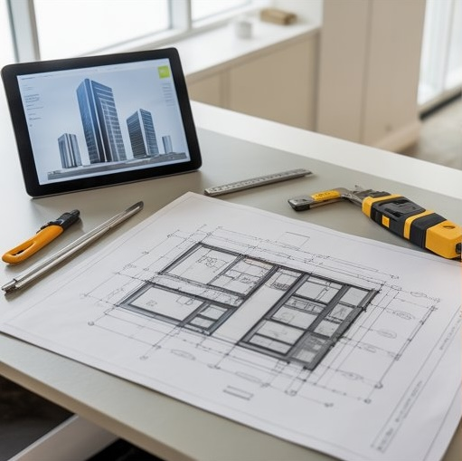
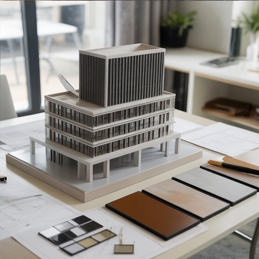

University of Kansas · University of Kansas portfolio
Shohreh Zangeneh-Hershey
Architecture degree, School of Architecture at the University of Kansas · Construction Management (School of Engineering) · Project Manager
University of Kansas portfolio
This site is my university portfolio for the University of Kansas. I hold an architecture degree from the School of Architecture at the University of Kansas and a degree in Construction Management from the School of Engineering, linking design thinking with delivery, estimating, and field practice. School projects, studios, and CM work live in Weekly AI News.


Open assignments → for coursework summaries and detail pages.